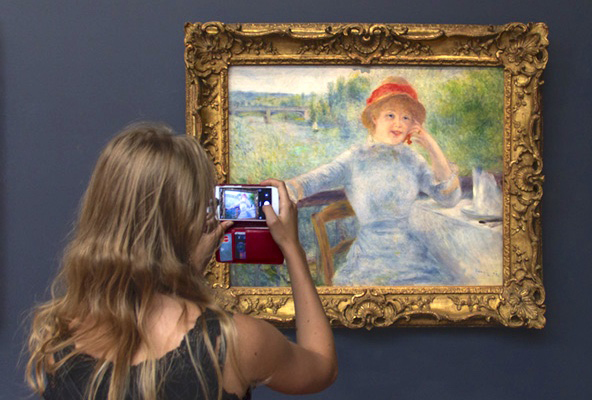
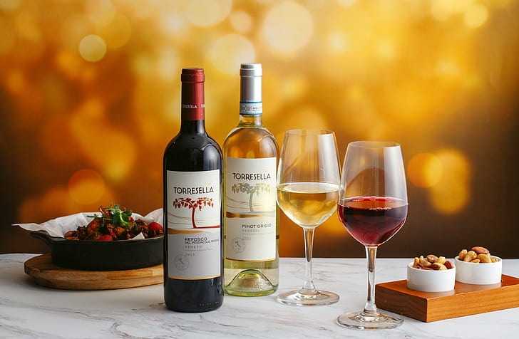

Why Visit ?
The capital of France seems to have been designed specifically for the enjoyment of its visitors. Its streets, squares, buildings, gardens and monuments beckon tourists to return, and indeed, many do.
Some of the most memorable things to do in Paris include visiting Eiffel Tower, the Arc de Triomphe and Notre-Dame Cathedral. During the evening, experiencing one of the legendary Moulin Rouge cabaret shows, strolling through some of the most picturesque neighborhoods, like Montmartre, or climbing the Montparnasse Tower are a must.

Thrilling Iconic Attractions

Paris Museums & Cool Street Art
